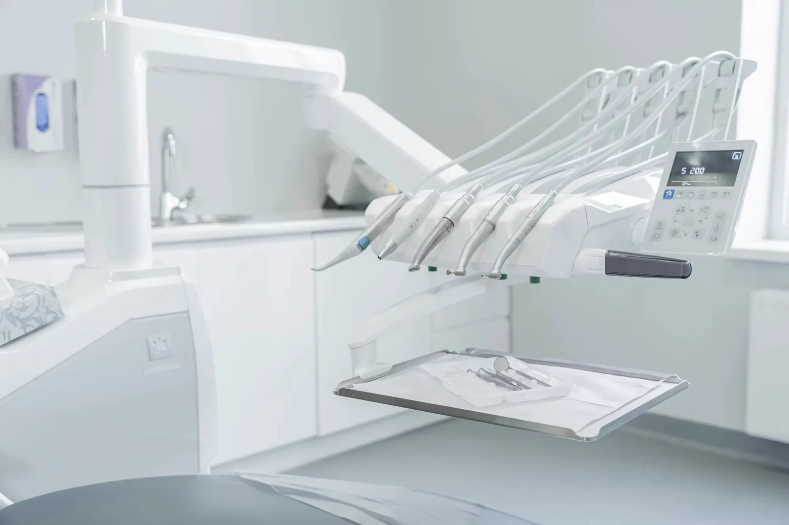
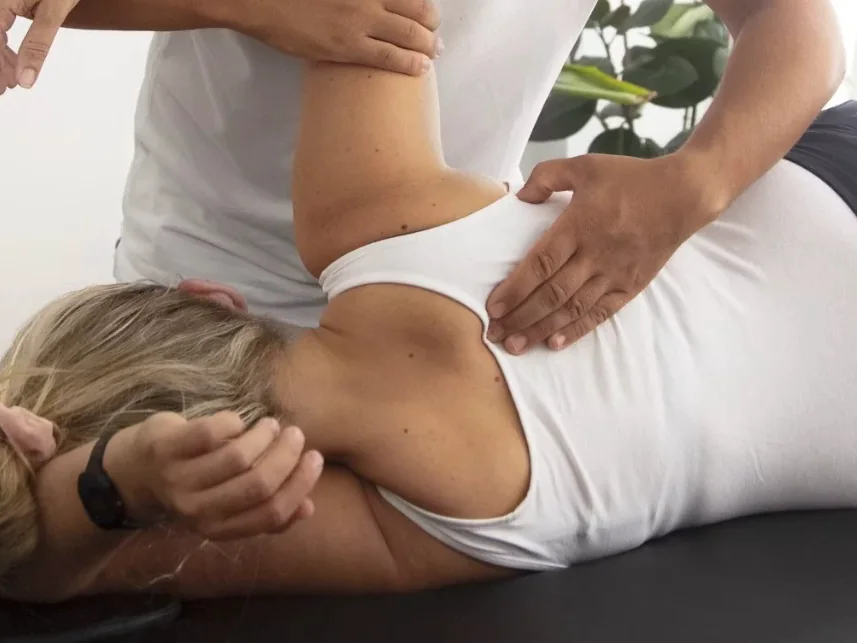
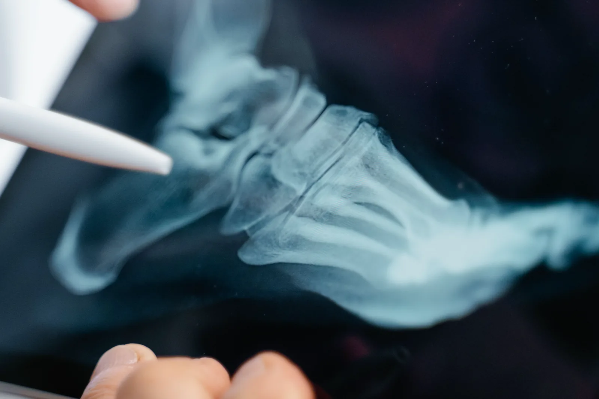
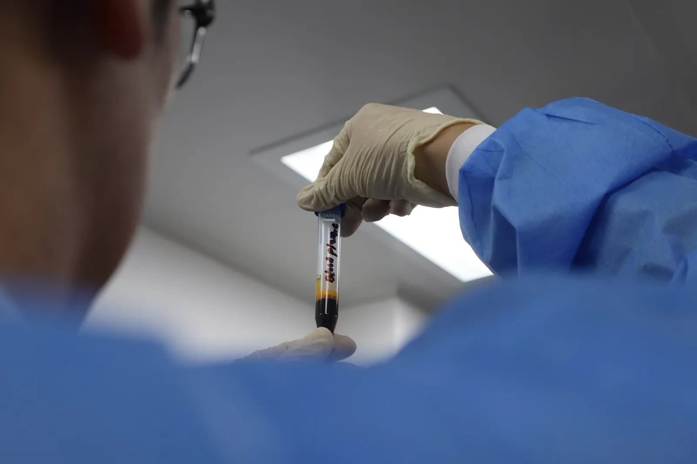

I nostri servizi
Un centro polispecialistico per prenderti cura di te in ogni aspetto della salute.
Odontoiatria
Sorrisi sani, cure di qualità: la nostra passione è la vostra salute dentale. Il reparto di odontoiatria del Centro Medico Minetti Milano è uno studio dentistico storico che abbraccia tutte le branche della dentistica moderna, dalla prevenzione alle procedure più complesse di chirurgia orale e implantologia. I nostri odontoiatri a Milano seguono i pazienti dalla prima visita fino al piano di cura personalizzato.
Prestazioni
- Igiene e prevenzione dentale
- Odontoiatria conservativa (trattamento della carie)
- Odontoiatria estetica (faccette, sbiancamento, smile design)
- Chirurgia orale (denti del giudizio, estrazioni complesse)
- Protesi fissa e rimovibile
- Gnatologia (articolazione temporo-mandibolare)
- Ortodonzia (apparecchi fissi e trasparenti)
- Parodontologia
- Endodonzia (devitalizzazioni)
- Implantologia all'avanguardia

Medicina Estetica
Trattamenti personalizzati e non invasivi per la prevenzione dell'invecchiamento e il miglioramento del benessere cutaneo. La nostra specialista combina competenze mediche e odontoiatriche per risultati naturali e duraturi.
Prestazioni
- Tossina botulinica (botulino)
- Filler con acido ialuronico
- Biorivitalizzazione e mesoterapia
- Trattamenti viso e corpo
- Peeling chimici
- Estetica dentale integrata
Osteopatia
Riequilibriamo il tuo corpo, rivitalizziamo la tua vita. L'osteopatia è una disciplina medica manuale che utilizza tecniche specifiche per individuare e trattare le restrizioni di mobilità che possono essere causa di dolore e disfunzione.
Prestazioni
- Valutazione posturale globale
- Trattamento mal di schiena e lombalgia
- Cervicalgia e cefalee tensionali
- Dolori articolari e muscolari
- Osteopatia viscerale
- Osteopatia cranio-sacrale
- Trattamento in età pediatrica

Podologia
La podologia si occupa della valutazione e del trattamento delle alterazioni anatomiche e funzionali del piede e della caviglia. Il nostro podologo effettua analisi biomeccaniche avanzate per individuare le cause di dolore e disfunzione.
Prestazioni
- Analisi computerizzata della pressione plantare
- Valutazione biomeccanica del passo
- Plantari ortopedici su misura
- Cura del piede diabetico
- Trattamento unghie incarnite e micosi
- Podologia sportiva
- Valutazione pediatrica del piede

Nutrizionista
Una corretta alimentazione è alla base della salute. La nostra biologa nutrizionista elabora piani alimentari personalizzati per il mantenimento della salute, la prevenzione delle malattie e il supporto a percorsi terapeutici.
Prestazioni
- Visita nutrizionale e anamnesi alimentare
- Piani dietetici personalizzati
- Diete per patologie specifiche (diabete, celiachia, ipertensione)
- Nutrizione sportiva
- Gestione del peso corporeo
- Nutrizione in gravidanza e allattamento
- Bioimpedenziometria (analisi della composizione corporea)
Ematologia
L'ematologia si occupa della diagnosi, valutazione prognostica e trattamento delle malattie del sangue. La nostra specialista offre anche il monitoraggio della terapia anticoagulante orale per i pazienti in trattamento cronico.
Prestazioni
- Diagnosi malattie del sangue
- Monitoraggio terapia anticoagulante (TAO)
- Valutazione anemie e piastrinopenie
- Consulenza per linfomi e leucemie
- Gestione disordini coagulativi
- Valutazione di secondo livello

Ortopedia
Ricostruiamo il tuo movimento, ripristiniamo il tuo benessere. Il nostro specialista ortopedico si occupa della diagnosi e del trattamento delle patologie muscolo-scheletriche con un approccio clinico moderno e orientato al paziente.
Prestazioni
- Diagnostica muscolo-scheletrica
- Trattamento traumi e fratture
- Patologie da sport e sovraccarico
- Gestione osteoartrosi
- Infiltrazioni con PRP e acido ialuronico
- Ortopedia pediatrica
- Patologie della colonna vertebrale
Conosci i nostri specialisti
Scopri il team di professionisti del Centro Medico Minetti.